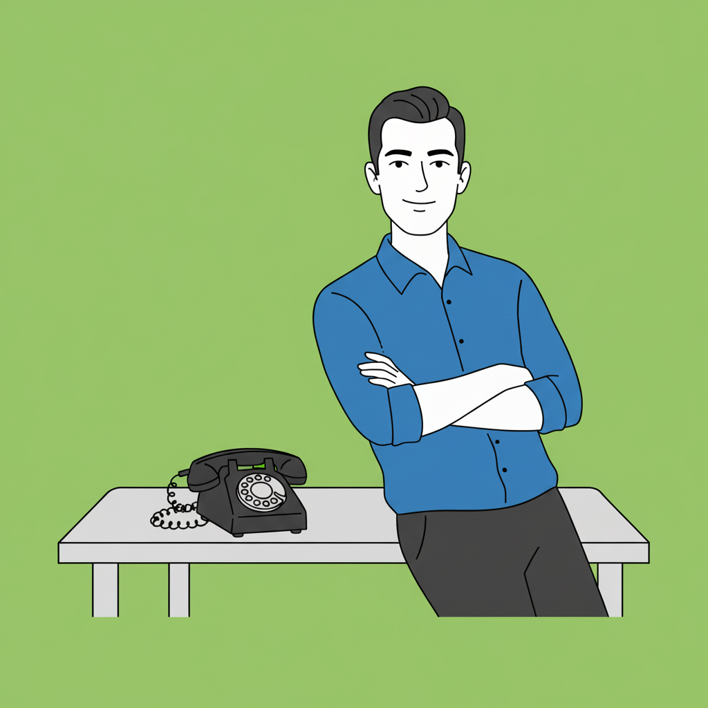
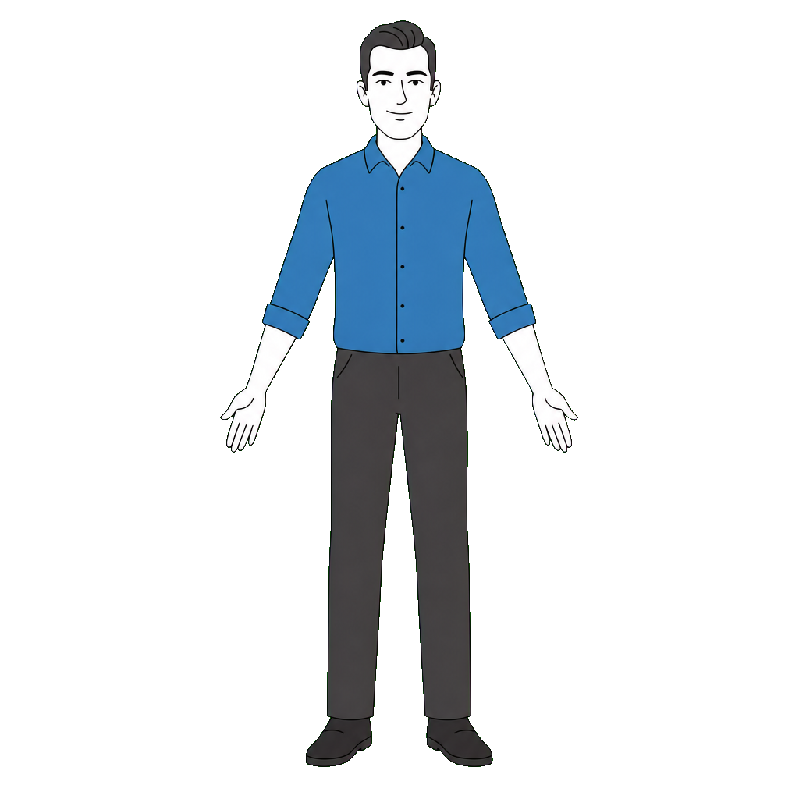
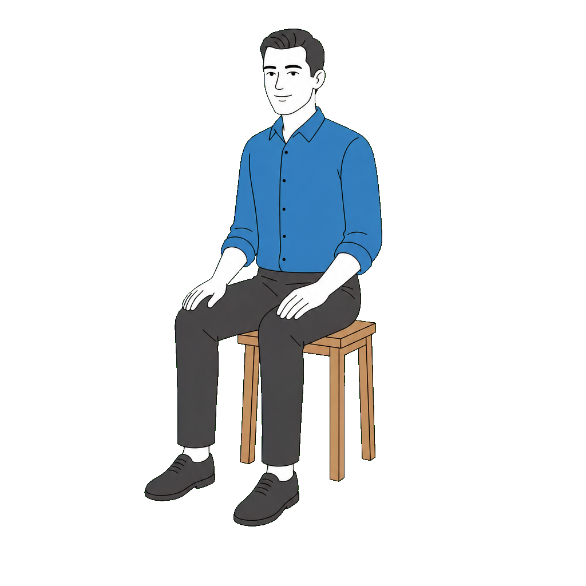

01
Build a marketing plan
Tell Kai what you sell, who you serve, and which channels matter. Kai turns that into a clear plan instead of a pile of random tasks.
/kai-start
Marketing help that starts with a plan. Kai helps business owners and lean teams decide what to do next, draft the work, and review it before anything goes live.

Kai gives business owners and lean teams a simple route from "we need more customers" to "this is the next marketing action to approve."
Tell Kai what you sell, who you serve, and which channels matter. Kai turns that into a clear plan instead of a pile of random tasks.
/kai-start
Run audits for your website, SEO, content, ads, analytics, and missed-call follow-up so you know what to fix first.
/kai-audit
Draft landing pages, emails, ads, SEO briefs, social posts, competitor notes, and campaign plans from the same business context.
/kai-write
Kai sends proposed work to an approval queue so a human can check claims, tone, timing, and risk before publishing.
/kai-gate
Bring in analytics, CRM, ads, email, website, calendar, and phone lead data so the system learns from real results.
connect tools
When prospects still call, Kai routes missed-call and after-hours follow-up to KaiCalls so phone leads do not disappear.
KaiCalls
Kai is for people who know the business but do not want to manage a mess of prompts, freelancers, spreadsheets, and unfinished campaign ideas.
Get help with landing pages, search gaps, review requests, follow-up, and missed-call capture.
Turn product context into launch plans, emails, content, ads, and weekly marketing priorities.
Use a repeatable brief-to-approval process without rebuilding the same marketing checklist for every client.
The local skills are the operator surface. They load the right marketing rules, collect the right context, and route the work through quality checks instead of starting from an empty prompt.
Create a working brief, growth plan, brand position, budget, and launch path.
/kai-start
/kai-brief
/kai-growth-plan
/kai-brand
Find weak pages, search gaps, CRO issues, analytics holes, and follow-up problems.
/kai-audit
/kai-seo-audit
/kai-cro
/kai-analytics
Draft the page, post, email, ad, video, case study, or newsletter from the same business memory.
/kai-write
/kai-landing-page
/kai-email-system
/kai-video
Build campaigns with platform rules loaded before copy is written.
/kai-ad-campaign
/kai-cold-outreach
/kai-retarget
/kai-abm
Score usefulness, catch banned words, lint search content, and block risky claims.
/kai-gate
four_us_score.py
seo_lint.py
Keep a record of approved work, connected signals, and the next actions that need review.
memory
traces
approval queue
The hosted app is where connected accounts, audit findings, proposed work, approvals, and campaign history live. The public page should help visitors understand that first.
Website, search, content, ads, analytics, CRM, email, and phone lead signals in one place.
review
approve
route
ship
The mascot system gives the product a recognizable face without letting the character cover the message. Kai supports the page. Kai does not hide the page.


Kai is the assistant who turns messy marketing work into the next reviewable action.
No fake dashboards as a hero. No mystery jargon before the visitor knows what the product does.
Business owners should not have to trust raw AI output. Kai uses quality gates, policy references, and human approval steps before work is ready to publish.
Every draft is scored for being unique, useful, specific, and urgent enough to matter.
Risky claims, weak proof, banned words, and generic filler get caught before launch.
Google, Meta, TikTok, LinkedIn, and other channel rules are loaded when ads are created.
Kai proposes the work. A person still checks tone, timing, risk, and final publish decisions.
Search engines and answer engines need clear public content. This page now explains the product, use cases, process, skills, FAQ answers, schema, and important internal paths in plain HTML.
The page says what Kai is, who it is for, what problems it solves, and how the product works.
Headings cover marketing assistant software, audits, content approval, skills, integrations, and KaiCalls.
FAQPage and SoftwareApplication schema help Google and answer engines understand the offer.
The page links to the app, GitHub runtime, llms.txt, and KaiCalls instead of trapping visitors at login.
For call-driven businesses, marketing does not end at a form fill. Kai audits the phone lead path and routes missed-call, after-hours, and qualification gaps to KaiCalls.
Answer, qualify, route, and log phone leads so the marketing system can act on them.
The public homepage should answer the basic questions before anyone reaches a login screen.
Kai is a marketing assistant for business owners and lean teams. It helps build a plan, find gaps, draft the work, and review the next marketing action.
No. Kai is built around marketing workflows. The /kai skills create briefs, run audits, draft campaigns, check quality and policy, and keep a record of approved work.
Kai can draft landing pages, emails, ads, SEO briefs, social posts, newsletters, competitor notes, case studies, launch plans, and campaign plans.
Kai checks usefulness, specificity, claims, banned words, search structure, ad policy, approval status, analytics gaps, and phone lead capture.
Kai is designed to connect analytics, CRM, ads, email, website, calendar, phone lead, and publishing tools so recommendations can use real business signals.
KaiCalls handles missed calls, after-hours answering, and phone-based lead qualification for businesses that still win customers by phone.